1. 前言與注意事項
本手冊說明後台管理者如何建立與執行投票場次。建議依「作業流程總覽」章節順序設定；各功能細節見後續章節。
注意事項
- 網址與存取路徑（依 Web Server 與
.env設定而定，詳見 SETUP.md、CONFIGURATION.md）： - 投票首頁：
https://{您的網域}/（Document Root 應指向專案的web/目錄） - 管理者登入：
https://{您的網域}/admin - 場次短網址：
https://{您的網域}/{短網址編號}（於投票編輯頁設定） - 環境識別：由
.env的APP_ENV（production / testing / development）決定 - 必須在
.env設定ALLOWED_HOSTS（逗號分隔，支援萬用字元），否則所有請求會被拒絕 - 分組專屬網域轉址（選用，於 Web Server 設定）：
- 可為各分組設定獨立網域，透過 nginx/Apache 轉址至對應場次的短網址
- 例：
https://group-a.example.com→https://voting.example.com/abc123 - 變更短網址編號時，需同步更新 Web Server 轉址規則
2. 作業流程總覽
依下列順序建立與執行一場投票。灰色項目為選用。
- 建立／編輯場次（類型、分組、時間、流程）
- 輪次（單輪可略；多輪時於選票產生後再建下一輪）
- 問題與投票規則（含選用：投票母數）
- 候選名單與畫面配置
- 密碼（僅匿名投票）→ 啟用後開放投票
- 選票（查詢／補登／匯入）
- 計票 → 開票 → 結果
- 重啟／列印簽名（選用）
輪次與資料是否共用
多輪投票時，下列功能是否沿用各輪資料：
| 功能 | 不同輪次是否共用 |
|---|---|
| 場次設定（編輯） | ✔️ 共用 |
| 問題 | ❌ 各輪獨立 |
| 候選 | ❌ 各輪獨立 |
| 密碼 | ✔️ 共用 |
| 選票 | ❌ 各輪獨立 |
| 計票／開票 | ❌ 各輪獨立 |
| 結果顯示設定 | ✔️ 共用 |
角色權限（簡表）
| 角色 | 說明 |
|---|---|
| sa（系統管理者） | 網站設定、使用者、全部場次 |
| va（投票活動管理者） | 建立與管理所負責場次 |
| ga／gm（群組管理者／成員） | 管理所屬群組內場次（依成員權限） |
3. 場次設定
建立投票場次後，於「編輯」設定名稱、類型、分組、時間、顯示流程與樣板。場次層設定跨輪次共用。
基本設定
投票名稱
可以使用Html，有該場次的投票就會出現投票名稱資訊。
投票名稱(英)
同投票名稱
主辦單位
現在沒有應用，單純紀錄
主辦單位(英)
同主辦單位
投票時間與投票狀態
兩者連動，決定投票者能否登入投票：
- 投票狀態等於等待，投票登入頁面訊息顯示: 目前投票尚未開始。
- 投票狀態等於進行，且當下時間小於投票時間(起)，無法投票，投票登入頁面訊息顯示: 目前投票尚未開始。
- 投票狀態等於進行，且當下時間大於等於投票時間(起)，且小於等於投票時間(迄)，可以投票，投票登入頁面訊息顯示: 開始投票，請輸入場次碼及線上投票密碼。
- 投票狀態等於截止，或當下時間大於投票時間(迄)，無法投票，投票登入頁面訊息顯示: 目前投票已結束。
- 投票狀態等於補登，且當下時間大於等於投票時間(起)，且小於等於投票時間(迄)，可以投票，投票登入頁面訊息顯示: 開始進行補登／紙本計票作業，請輸入場次碼及線上投票密碼。
※ 投票時間(迄)就是計票的日期。
投票類型
- 表決（無須驗證）：不需登入驗證即可投票。
- 匿名（亂數密碼）：透過系統生成的亂數密碼登入投票。
是否分組
- 分組
- 至多分成4組（上限可由「網站設定 → 分組上限」調整），各組分組名稱於場次編輯時自訂。
- 另有部署端組織 preset（
config/params.php的ct.division*Ary），與場次自訂分組名稱並行，詳見 SETUP／CONFIGURATION。 - 不同分組可以有分組自己的問題，也可以有不同分組間的共同問題。
- 匿名投票的密碼根據分組生成。
- 開票可以設定不同分組僅能查看該分組的投票結果。
- 不分組
- 分組名稱為預設。
保留名額
- 女性保留名額: 最後開票結果，性別設定為女性候選人，要大於等於問題設定的女性保留人數。
投票結果顯示
- 僅分組可以設定。
- 所有分組: 投票結果所有分組一起顯示。
- 僅限同分組: 開票可以設定是否分組顯示結果。
是否共用投票密碼與共用密碼之投票
- 若此投票有分組，分組數量及順序必須與共用密碼的投票相同。
- 分組投票無法共用不分組投票的密碼。
群組
讓特定群組的成員可以管理該場次的投票。
投票管理者
- 建立這場投票的人。
- 投票活動管理者可以選擇其他具系統權限的管理者。
- 系統管理者可以選擇所有具系統權限的管理者。
場次碼
登入投票需要輸入的資料，未設定則不啟用。
短網址編號
- 透過
https://{您的網域}/{短網址}，可以直接指向該投票場次。 - 系統管理者可以修改。
顯示及流程
投票狀態
- 同投票時間與投票狀態
- 投票狀態會顯示在標題右上角(如下圖紅框處)
投票完成跳轉頁面
投票完成、投票結束尚未送出投票後導向的頁面
是否略過投票資訊頁面
- 投票資訊頁指的是vote/vote-detail頁面。
- 選擇是，vote/vote-detail路由會直接導向投票頁面(vote/start-vote)
- 如果有上傳附件，附件會在投票資訊頁中顯示，所以如果要讓使用者看到附件，必須選否。
查看投票資訊是否驗證
- 如果略過投票資訊頁面選擇是，則忽略此設定。
- 投票資訊指的是vote/vote-detail路由。
- 意思就是訪問vote/vote-detail頁面是否要先登打投票密碼。
是否略過圈選結果頁
以公版來說，再次進入投票頁面(vote/start-vote)，如果已經完成投票，會導向圈選結果頁(vote/check-ballot)，但若流程不需讓投票者回看圈選結果，可設為略過，送出後直接導向投票完成頁，所以會直接導向投票完成跳轉頁面。
是否於首頁顯示
- 此投票場次的連結是否於首頁(vote/index)顯示。
- 如果網站設定的首頁導向網址有資料，則無視此設定，因為首頁都會導向首頁導向網址。
候選名單配置
- 依投票場次統一: 只會有一個候選名單配置，所有問題共用。
- 依問題個別設定: 每個問題可有獨立的候選名單配置。
投票列表排序
影響投票場次列表與首頁的排序，僅系統管理員可更改。
預設投票規則（帶入用）
此處數字不直接判定有效／廢票；真正規則在「問題 → 問題投票規則」。此處僅供建立問題時快速帶入。
不分組時組別名稱固定預設；分組時可自訂各組中英文名稱。
| 欄位 | 說明 |
|---|---|
| 最多可投票數 | 投票數上限（帶入問題用） |
| 最少應投票數 | 投票數下限（帶入問題用） |
| 當選人數 | 開票時得票前 N 高為當選 |
| 遞補人數 | 扣除當選後，得票前 N 高為候補 |
| 女性保留人數 | 若啟用「女性保留名額」，開票時優先保留性別為女性之當選名額 |
| 清點人數 | 影響計票的選票數量，僅當前輪次有效 |
投票說明(選填)
顯示在投票資訊頁面各項資訊，各資訊有資料才會顯示，如果是否略過投票資訊頁面設定是，只有圈選須知跟候選名單備註有效果(因為只有這兩個會出現在投票頁面)，效果如下圖:
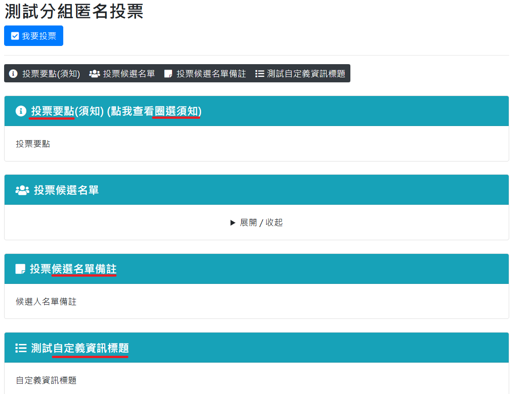
附件上傳
每個投票場次可以上傳5個附件，附件格式限制png, jpg, jpeg, gif, docx, doc, pdf, pptx, ppt, csv, xlsx, xls, txt, odt, ods, odp等副檔名的檔案。
附件顯示的位置在投票資訊頁的最底部。
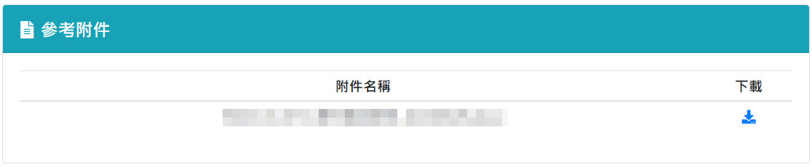
進階
投票密碼登入樣板: 匿名投票密碼輸入頁面的樣板，可以選擇公版或會議版。
投票樣板: 投票圈選頁面的樣板，可以選擇公版或會議版。
主題色: 影響投票密碼輸入頁面、投票結束頁的背景顏色。
4. 輪次
多輪投票時用來區分各輪的問題、候選與選票。建立下一輪前，前一輪至少需有 1 張選票。
輪次會顯示在標題右上角(如下圖紅框處)
建立
點擊下圖紅框按鈕建立輪次，必須注意前一輪次至少要有1張選票才能建立新輪次。
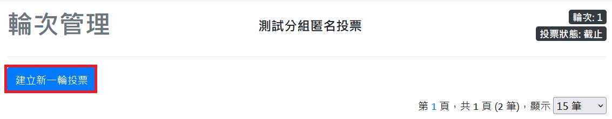
修改
點擊輪次名稱進入修改。
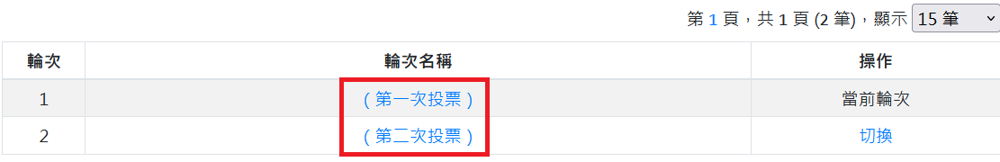
| 欄位 | 說明 |
|---|---|
| 名稱／英文名稱 | 可使用 HTML |
| 是否顯示輪次名稱 | 選「是」時，輪次名稱接在投票名稱之後 |
| 啟用密碼數量 | 啟用／停用密碼時自動更新。陣列依組別順序，例如 [60,53,28,45] |
切換
點擊下圖紅框切換輪次。
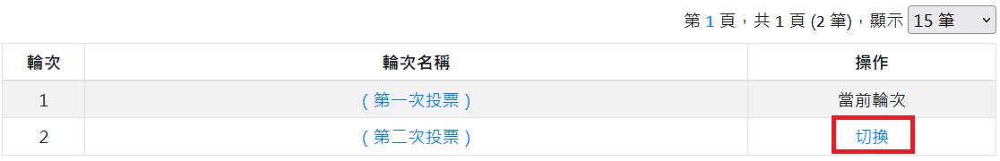
5. 問題
問題用來區分不同類別的候選名單，各自擁有獨立的投票規則。分組場次可設組內問題或共同問題。
- 問題是投票頁面區別不同類別候選名單的功能。
- 各問題會顯示在投票頁面的最上方(如圖1)。
- 一個投票場次可以有多個問題，各分組有屬於自己的問題(如圖2)。
- 共同問題是所有分組都要圈選的，所有分組一起統計選票；共同問題隸屬的分組叫做共同投票。
- 每個問題都有獨立的投票規則。
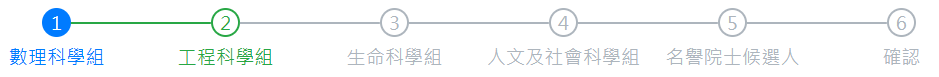
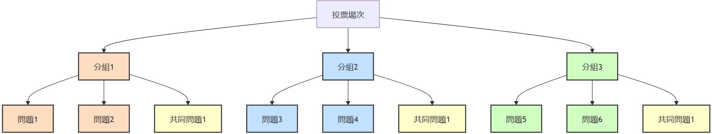
欄位說明
| 欄位 | 說明 |
|---|---|
| 組別 | 僅「是否分組＝是」時出現。選特定分組則僅該組可見；選「共同投票」則所有分組可見並合併統計。 |
| 標題／英文標題 | 問題顯示名稱，可使用 HTML。 |
| 描述／英文描述 | 補充說明文字（見下圖）。 |
| 自定義未圈選顯示名稱 | 下限為 0 且未圈選時，確認步驟的顯示文字（預設為標題）。 |
| 自定義投票規則文字 | 覆蓋自動產生的規則說明文字。 |
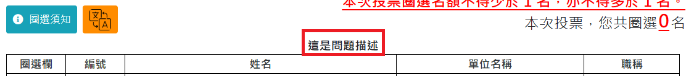
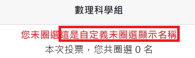
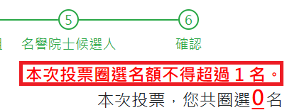
問題投票規則（有效／廢票）
- 這裡的投票規則才是真正影響有效票或廢票的設定。從下拉式選單選擇組別，會自動帶入編輯的投票規則的設定數字。勾選自訂規則可以自由輸入數字。
未設定自訂投票規則文字時，系統依上下限自動帶出說明文字：
| 條件 | 顯示文字 |
|---|---|
| 無上下限（上限 ≧ 候選總數且下限 = 0） | 本次投票圈選名額無限制。 |
| 僅有上限 | 不得超過 {最多可投票數}{名稱的單位}。 |
| 僅有下限 | 不得少於 {最少應投票數}{名稱的單位}。 |
| 上下限皆有 | 不得少於 {最少應投票數}，亦不得多於 {最多可投票數}{名稱的單位}。 |
投票母數
- 代表該問題所屬分組的「應有投票人數」（例如該組全體有投票權的人數），與「啟用密碼數量」（實際可投票／已發放的票數）不同。
- 供紀錄用；可依實際需求填寫，不影響有效／廢票判定與開票。
匯入輪次問題
- 匯入前N個輪次建立的問題。
- 在頁面修改要匯入問題的投票規則。
- 該問題的候選名單配置會一併匯入。
- 點擊右上角的紅色叉叉按鈕刪除不需要匯入的問題。
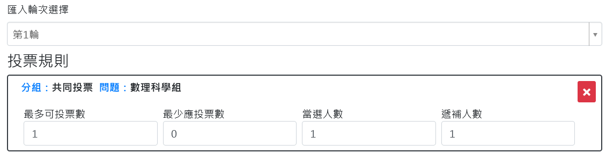
6. 候選
管理候選人資料，並設定投票頁上的名單呈現方式（欄位、排序、列數、顏色等）。
候選名單管理
手動新增
單筆新增候選名單，上傳照片只能手動新增時操作。
檔案導入
透過CSV檔案上傳的方式，批次匯入候選名單，頁面上有4個頁籤。
- 進入範例下載頁籤下載範例CSV檔案。
- 編輯CSV檔案，投票組別(中文)、問題代碼、名稱必填，相關欄位的填寫請參考欄位說明頁籤，檔案必須是具有BOM的UTF8的CSV檔案。
- 進入上傳CSV頁籤選擇檔案並點擊開始匯入。
輪次導入
匯入前一個輪次建立的候選名單，已達門檻的候選人也在此處設定。
候選人組別: 要匯入的前一個輪次的組別。
候選人問題: 要匯入的前一個輪次的問題，選擇後會列出該問題的候選名單。
導入組別: 要匯入的當前輪次的組別。
導入問題: 要匯入的當前輪次的問題。
候選人: 候選人問題選擇後會出現。勾選指定候選人設定已達門檻，其餘直接導入。
紅字括號是輪次1的得票排名，沒有排名表示前一輪已達門檻。
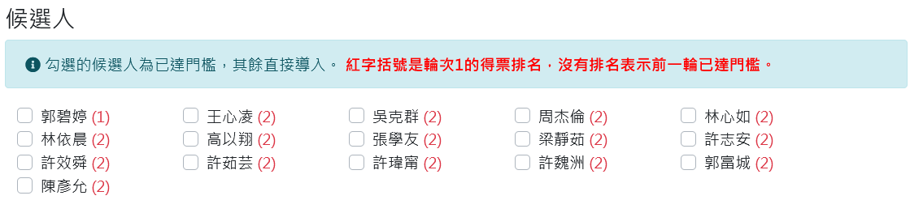
刪除候選名單
可以指定要刪除的分組、問題或生成方式。
候選名單欄位說明
| 欄位 | 說明 |
|---|---|
| 分組／問題 | 候選人隸屬的分組與問題 |
| 名字／名稱 | 顯示名稱 |
| 性別 | 影響女性保留名額之開票條件 |
| 自訂排序 | 選票匯入時的對應順序（orderNum） |
| 背景顏色 | 表格列背景色 |
| 關聯組別 | 共同問題用，取得分組人數 |
| 特殊榮譽 | 選用：標記是否符合特殊條件 |
| 已達門檻 | 選「是」時，圈選改顯示「已達門檻」文字 |
候選名單配置
設定投票頁面候選名單呈現樣式，可以依照問題個別設定。
基本設定
編號顯示:
- 顯示自動編號: 依照表格順序加入數字，從1開始。
- 顯示自訂義編號: 顯示候選名單自訂排序的數字。
寬度: 決定候選名單表格的寬度，如下圖，上寬下窄。
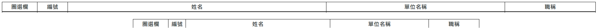
投票時候選名單顯示列數: 候選名單要分成幾個表格呈現，下圖是設定為2的效果，上圖則是設定為1的效果。
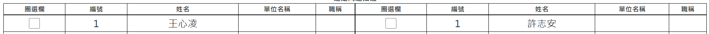
※ 如果候選名單要排序，必須設定為1。
使用欄位表頭:
- 候選名單表格的表頭是否要再加上一層表頭。
- 選擇是，儲存後才會出現欄位表頭的設定區域。
- 需要搭配欄位顯示、排序的設定才會顯示。
- 下圖是呈現效果，在編號和姓名的上方多了一層表頭。
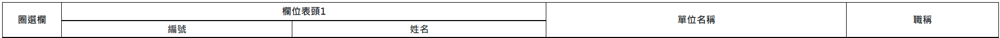
名稱顯示文字: 影響候選人姓名這個欄位的表頭顯示的文字。
名稱的單位: 影響投票頁面右上角及確認頁面已勾選的候選人數字的單位。英文如果為複數會自動加s。位置如下圖紅框所示:
文字大小: 表格內文字的尺寸，一定要填單位，px、em、rem等等。
表格高度: 表格儲存格的高度，一定要填單位，px、em、rem等等。
表格標頭顏色:
- 表頭的顏色，包含使用欄位表頭，請使用含井字號的16進制色碼。
- 若投票時候選名單顯示列數大於1，可以用半形逗號區隔多個色碼達到下圖效果。
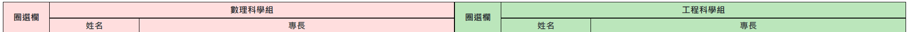
是否使用排序: 只有投票時候選名單顯示列數設定為1才有效，搭配排序的欄位設定那些欄位要排序，目前只有姓名、自定義名稱可以排序。
預設排序的欄位: 不選擇則按候選名單排序，只能選要排序的欄位。
文字向左對齊欄位: 預設都是置中對齊，有選擇的欄位才會置左。
自定義欄位
- 這邊設定的是自訂自欄位名稱的表格表頭名稱。
- 正常欄位超過長度會換行，僅有自定義欄位名稱1的儲存格內容超過表格長度的部分會被替換成...，點擊輸入框後會還原，如下圖所示:
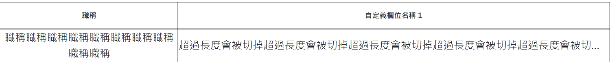
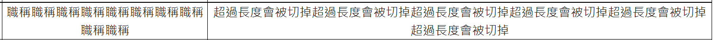
欄位表頭
投票時候選名單顯示列數大於1時，單一欄位表頭名稱以半形逗號分隔，表示不同表格的顯示文字。ex: 候選名單顯示列數等於3，欄位表頭名稱為「表頭一, 表頭二, 表頭三」，投票頁面呈現如下:
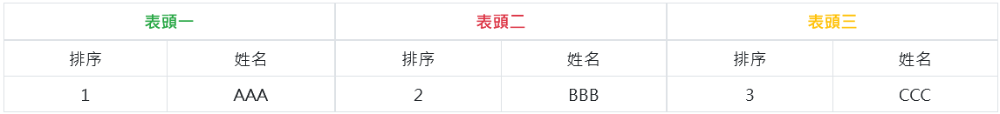
欄位顯示、排序
- 設定表格內要顯示的欄位以及欄位的排序，包含欄位表頭也要設定才會顯示。
- 圖3的設定會呈現圖4的效果。
- 所有的表格表頭目前文字固定大小18px。
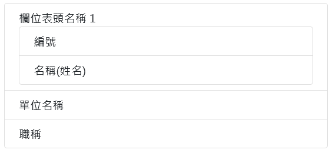
(圖3)
(圖4)
排序的欄位
- 投票時候選名單顯示列數等於1才能排序，也才會顯示這個區域。
- 必須拖曳到要排序的欄位底下，候選名單表格才會出現排序的按鈕。
候選人管理頁面
如果候選名單配置設定為依問題個別設定，必須選擇切換頁數上面的下拉式選單，才會按照指定問題的配置呈現。
7. 密碼
僅匿名投票使用。產生、啟用密碼後方可讓投票者登入。共用密碼場次請見下方限制。
- 僅有匿名投票可以操作，透過生成條件的密碼批次產生密碼。
- 共用密碼場次：可設定狀態、密碼匯出、生成密碼函、列表查詢；不可在本場次生成或刪除密碼（密碼池屬於被綁定的主場次）。批次變更狀態會影響所有綁定該密碼池的場次。
- 共用密碼會在表格上方顯示共用哪個場次的密碼，如下圖所示。
- 共用密碼的條件請參考是否共用投票密碼與共用密碼之投票。
密碼列表與遮罩
- 列表「密碼」欄預設顯示
密碼#編號（遮罩），不含明文。 - 按工具列 顯示明文，完成二次驗證後，列表於時效內（預設 15 分鐘）顯示明文；可按 立即鎖定 提前結束。
- 明文亦可透過下方「密碼匯出」「生成密碼函」取得（同樣需二次驗證）。
本輪已投票
- 列表欄位「本輪已投票」表示：目前場次、目前輪次是否已有選票（以選票資料為準），不是資料庫內 legacy 的
passwords.voted欄位。 - 可於列表篩選、設定狀態、密碼匯出、生成密碼函條件中指定「本輪已投票」是/否。
- 多輪次投票時，切換輪次後「本輪已投票」會隨目前輪次改變。
生成密碼
生成條件
| 欄位 | 說明 |
|---|---|
| 組別 | 密碼所屬組別（未分組則為預設） |
| 密碼組成 | 字元類型 |
| 密碼長度 | 至少 6 碼 |
| 密碼數量 | 批次產生數量 |
| 格式 | 僅英數混合時有效。數字=i、小寫=s、大寫=S（例：iissSS → 66ggGG） |
| 標記 | 為此批密碼加上 tag，方便篩選 |
| 狀態 | 產生時的預設啟用狀態 |
設定狀態
根據設定條件（組別、標記、雙軌投票、本輪已投票）批次設定密碼的啟用狀態。僅變更 status，不會改變「本輪已投票」的選票紀錄。
刪除密碼
- 避免誤刪密碼，網站設定的是否可以刪除密碼為是才能刪除密碼。
- 根據組別或標記刪除指定或全部的密碼。
密碼匯出
根據條件（含本輪已投票）匯出密碼 CSV。匯出內容含明文密碼，送出前須二次驗證（管理員密碼；若已啟用 TOTP 另需 6 碼），並寫入操作日誌（類型 166）。
生成密碼函
透過樣板的 docx 檔案，搭配內容關鍵字批次生成密碼函；與 Word 套印類似。可篩選本輪已投票等條件。含明文密碼，送出前須二次驗證（同上）。
單筆切換密碼狀態
點擊下圖紅框處的連結，實現單筆切換密碼狀態。
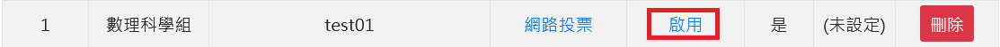
8. 選票
查詢、補登、匯入與匯出選票。涉及明文密碼的匯出須通過二次驗證。
建立選票
為指定的密碼建立選票。
匯入選票
- 兩個場次必須共用密碼，且問題及候選名單數量必須相同，否則無法匯入。
- 兩個場次的候選人自訂排序(orderNum)必須一致，選票圈選的候選人靠自訂排序(orderNum)對應。
- 如果問題的順序不同，請手動選擇問題對應；反之直接點選「按順序自動載入」的按鈕。
刪除全部選票
刪除指定分組的所有選票。
選票統計匯出
按工具列 選票統計匯出 展開表單，選擇格式並完成二次驗證後執行。匿名投票時「投票者」欄含明文密碼（紙本封存用）。操作寫入日誌（類型 176）。
CSV
- 全部欄位 (csv)：含選票編號、投票者、組別、IP、投票/修改時間、各問題圈選結果等。
- 無 IP、修改者、修改時間 (csv)：精簡版，適合對外提供統計。
投票結果封存單
- 於同一表單選「投票結果封存單 (列印)」並選擇問題，二次驗證後於新分頁開啟。
- 以表格列出該問題所有投票者與圈選候選人；匿名投票時投票者為明文密碼。
- 提供列印用簽名欄位。不可再透過舊版書籤直接開啟
/ballot/content（須經匯出表單）。
顯示明文（選票管理）
- 匿名投票時，選票列表「投票者」欄預設遮罩；工具列 顯示明文 完成二次驗證後，時效內顯示明文（與密碼管理相同機制）。
- 建立選票（選票建立者）頁面亦提供相同按鈕。
- 檢票 → 投票情形頁的「選票統計匯出」表單，流程與選票管理相同。
選票列印
- 根據特定問題和候選名單配置產生與投票頁面相同的畫面。
- 中英並列。
各問題的有效／廢票規則請見 問題投票規則。
選票管理頁面
- 點擊表格中的加號(+)，可以展開選票明細，會列出該選票各個問題的投票數和是否有效。
- 點擊編輯可以修改選票圈選的候選名單，同時修改者也會寫入資料。
9. 計票、開票與結果
投票進行中或結束後皆可計票與開票；開票不影響投票進行。結果頁可微調當選狀態並預覽公開畫面。
計票
- 會列出各分組問題候選名單的得票數及排序。
- 透過右上角的下拉式選單，可以調整排序，預設是「依得票高低排序」。
- 若候選名單已達門檻，得票數和排序會顯示「-」，如下圖「已達門檻」列所示。
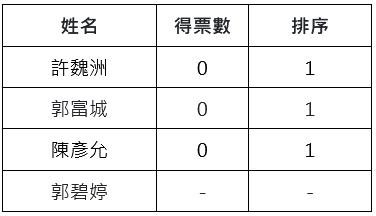
計票單匯出
匯出各分組問題的有效票、廢票和選票數量。
計票單列印
- 點擊頁面右上角的列印模式，或按ctrl+alt+P進入列印模式。
- 會跳出選擇簽名欄位，選擇後簽名欄位會出現在最下方的位置。
TIPS: 如果覺得列印模式太寬，可以點兩下ESC，會得到瘦身的版本。
開票
- 根據問題的投票規則，選出當選和候補的名單。
- 開票任何時後都可以使用，不影響投票的進行。
- 開票後仍然可以重新開票或刪除開票結果。
- 若所有選票皆為廢票，將無法開票。
欄位說明
| 欄位 | 說明 |
|---|---|
| 投票結果顯示 | 是否將開票結果顯示於結果列表 |
| 登入驗證 | 選「是」則需登入才可查看 |
| 投票結果排序 | 結果排序方式 |
| 投票結果顯示投票狀態 | 僅勾選的狀態會出現在最終畫面 |
欄位顯示、排序
與候選名單配置的欄位顯示、排序相同效果。
結果
當選與否
單筆修改
點擊藍色的字，會出現選單，選擇後按藍色的勾勾儲存。
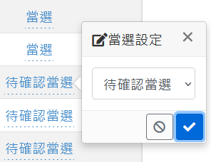
批次修改
- 於表格的第一欄勾選要修改的資料。
- 在批次操作選擇要改變的狀態。
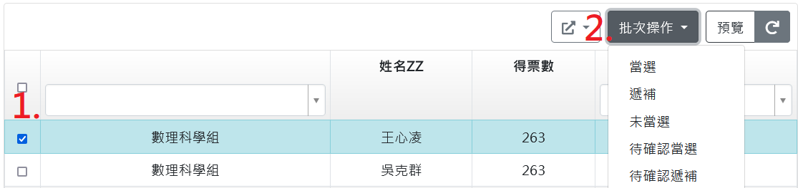
預覽
可以模擬使用者看到的最終畫面，只會顯示投票結果顯示投票狀態有勾選的狀態。
10. 重啟與列印
重啟投票
不可逆：將刪除選票、計票、開票及結果資料。
重啟投票將會刪除選票、計票、開票及結果的資料。
列印模式（簽名）
使用範圍
在計票、選票封存單等地方都可按ctrl+alt+P進入列印模式，會出現下圖的視窗。
11. 群組管理
將管理者組成群組，並授權管理特定投票場次。
建立與基本資料
建立群組
新增一個群組
基本資料
可以更改群組名稱
成員管理
新增成員
- 添加新成員進群組，必須有在使用者管理的人才能。
- 編輯投票與否: 是否有權編輯群組內的投票場次。
- 群組管理與否: 是否有權更改基本資料和新增成員。
群組所屬場次
在編輯的群組有設定的話，這些投票場次會出現在列表中。
12. 網站與帳號管理
全站參數、登入狀態、操作日誌與使用者帳號（含 TOTP 入口）。
網站設定
投票
| 欄位 | 說明 |
|---|---|
| 計票單行數 | 計票頁候選名單顯示行數，預設 3 |
| 分組上限 | 場次可設定的最多分組數，預設 4 |
| 是否可以刪除密碼 | 選「是」才允許執行刪除密碼 |
匿名登入防護
| 欄位 | 說明 |
|---|---|
| 嘗試錯誤次數 | 密碼錯誤上限 |
| 鎖定時間（秒） | 超過次數後鎖定秒數 |
| 等待時間（秒） | 登入按鈕需等待後才可點擊 |
其他
首頁樣板
網站首頁的樣式。
首頁標題
僅首頁樣板是「會議版」有效。
首頁導向網址
- 只要進入首頁，就自動轉址到設定的網址。
- 使用情境: 所有投票者都要投同一個場次，可將首頁網域設為首頁導向網址的目標。
品牌設定
| 欄位 | 說明 |
|---|---|
| Logo 路徑 | 相對網站根目錄（如 img/logo.png）；留空則不顯示 Logo |
| Favicon 路徑 | 預設 favicon.ico |
| 版權文字 | 頁尾顯示；留空則為「應用名稱 © 年份」 |
| 系統標題／系統標題(英) | 投票流程頁標題；留空則用首頁標題或應用名稱 |
清除登入狀態
- 可以強制登出特定場次、組別、標記的密碼投票者。
- 使用情境: 要補登之前，先清除所有的投票者登入狀態。
LOG
- 管理者或投票者操作的紀錄。
- 匿名登入失敗可查類型
501（LOGIN_PASSWORD_FAIL）：紀錄含voteID、錯誤原因，不含明文投票密碼（2026-07 起）。若需比對使用者輸入內容，請透過密碼管理匯出清單（有 audit log）。 - 含明文密碼的敏感操作日誌：
166密碼 CSV 匯出、176選票統計匯出/封存單、167列表明文解鎖、168列表明文鎖定、422/423TOTP 啟用/停用。
使用者管理
- 有在這邊建立的使用者，才可以登入管理者。
- 雙因素驗證（TOTP）：各管理者可自行於「雙因素驗證」綁定 Google Authenticator 等 App（須先由維運執行 DB migration）。詳見 二次驗證與雙因素驗證。
13. 二次驗證與雙因素驗證
系統對高敏感管理操作要求二次驗證（輸入目前登入的管理員密碼）。若帳號已啟用 TOTP，另須輸入驗證器 6 碼。由環境變數 SENSITIVE_REAUTH 控制（正式環境預設開啟；僅測試環境可關閉）。
涵蓋操作
| 操作 | 路徑 | 說明 |
|---|---|---|
| 密碼 CSV 匯出 | 密碼管理 → 密碼匯出 | 含明文密碼 |
| 生成密碼函 | 密碼管理 → 生成密碼函 | 含明文密碼 |
| 列表明文顯示 | 密碼管理 / 選票管理 / 選票建立者 → 顯示明文 | 解鎖後預設 15 分鐘（SENSITIVE_PLAINTEXT_TTL） |
| 選票統計 CSV | 選票管理 / 檢票 → 選票統計匯出 | 匿名投票時投票者為明文密碼 |
| 投票結果封存單 | 同上表單 → 封存單格式 | 新分頁列印；須選問題 |
| 同步 RBAC 權限 | 使用者管理（sa） | — |
| 停用 TOTP | 使用者管理 → 雙因素驗證 | 須密碼 + 驗證器代碼 |
TOTP 綁定步驟
- （維運）執行
docs/migrations/20260713_users_totp.sql。 - 登入後台 → 使用者管理 → 雙因素驗證。
- 輸入管理員密碼 → 掃描 QR Code → 輸入 App 顯示的 6 碼完成啟用。
注意：TOTP 不參與後台登入（登入仍只需帳密）；僅在上述敏感操作時加強驗證。建議 sa、va 等高權限帳號綁定 TOTP。
技術細節與開源檢查表見 SECURITY.md、docs/資訊安全評估與改善計畫.md。
14. 投票設定案例
以下依常見需求整理成五種類型案例，方便對照系統欄位設定。實際場次名稱、分組名稱、畫面樣式可依單位自行調整。下方截圖僅供畫面示意。
快速對照：
| 類型 | 是否分組 | 場次 | 多輪 | 候選名單配置 | 典型用途 |
|---|---|---|---|---|---|
| A. 單場次多分組並行 | 是 | 1 | 否 | 依問題個別 | 各組同時選召集人／代表 |
| B. 各組獨立場次 | 否* | 多 | 可 | 依問題個別 | 各組各自時程、可多類候選人 |
| C. 名單同意／審核 | 否 | 1 或多 | 通常否 | 依場次統一 | 對既有名單逐一表決 |
| D. 多問題多輪選舉 | 否 | 1 | 是 | 依問題個別 | 多類別候選人、可產出通過名單 |
| E. 參考投票 → 正式投票 | 混合 | 多 + 1 | 是 | 混合 | 先分組篩選再大會決選（含投票母數） |
*類型 B 的「是否分組」為否，是因為每個場次只服務一個組別；組別差異以「多個場次」表達。
A. 單場次多分組並行
一個場次內容納多個分組，投票者依所屬分組密碼只看到該組問題。適合各組同時選舉召集人、代表等。
| 項目 | 建議設定 |
|---|---|
| 投票類型 | 匿名（亦可表決） |
| 是否分組 | 是 |
| 場次數量 | 1 |
| 是否多輪 | 否 |
| 候選名單配置 | 依問題個別設定 |
| 問題 | 每組各自問題；可再拆子題（例如國內／國外） |
| 投票畫面 | 多列顯示；依分組設定表格標頭主題色 |
| 其他 | 自訂投票規則文字；各組主題色；可設首頁導向／短網址 |
| 列印項目 | 計票單、封存單 |
畫面示意：
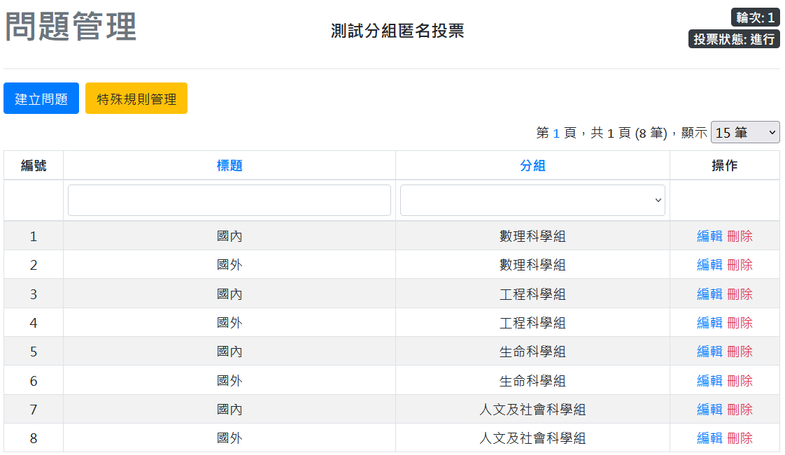
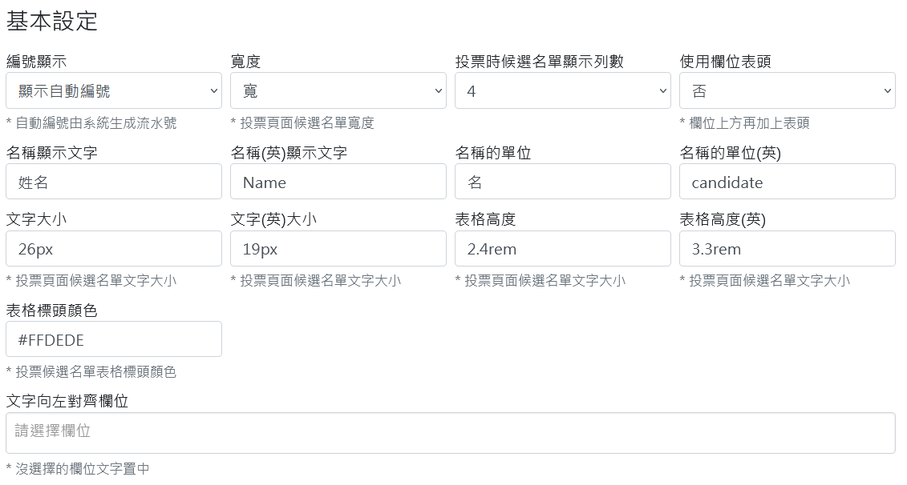
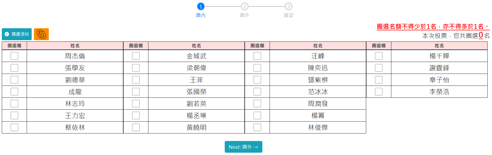
B. 各組獨立場次
為每個組別建立獨立場次（場次內不分組），時程、候選、輪次互不干擾。可搭配分組專屬網址進入。
| 項目 | 建議設定 |
|---|---|
| 投票類型 | 匿名 |
| 是否分組 | 否（每場次對應一組） |
| 場次數量 | 與組數相同 |
| 是否多輪 | 可 |
| 候選名單配置 | 依問題個別設定 |
| 問題 | 可同時有一般候選人、特別類等多個問題，版面可不同 |
| 投票畫面 | 多列；依組別主題色 |
| 其他 | 可不設首頁導向，改以分組專屬網址／短網址；特別類問題可自訂未圈選顯示名稱 |
| 列印項目 | 計票單、封存單 |
畫面示意：
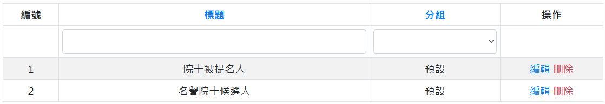
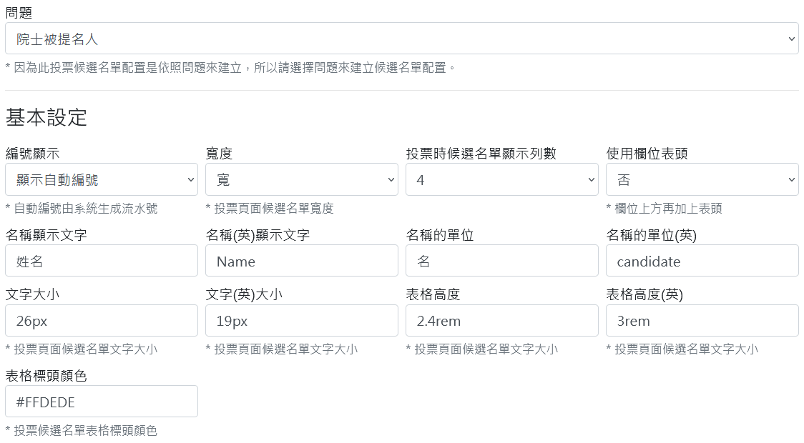
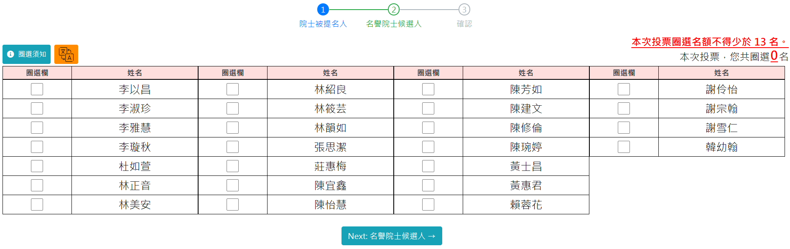
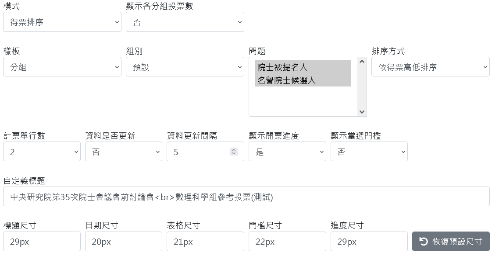
C. 名單同意／審核
對既有名單進行同意或圈選審核。候選結構一致時，建議「依投票場次統一」配置。
| 項目 | 建議設定 |
|---|---|
| 投票類型 | 匿名 |
| 是否分組 | 否 |
| 場次數量 | 1，或各組各一 |
| 是否多輪 | 通常否 |
| 候選名單配置 | 依投票場次統一 |
| 投票畫面 | 單列、使用欄位表頭、排序、自訂欄位 |
| 其他 | 會議版主題色；可設首頁導向 |
| 列印項目 | 計票單、封存單 |
畫面示意：
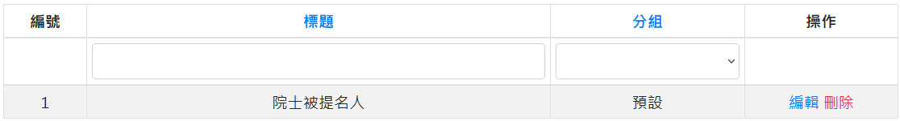
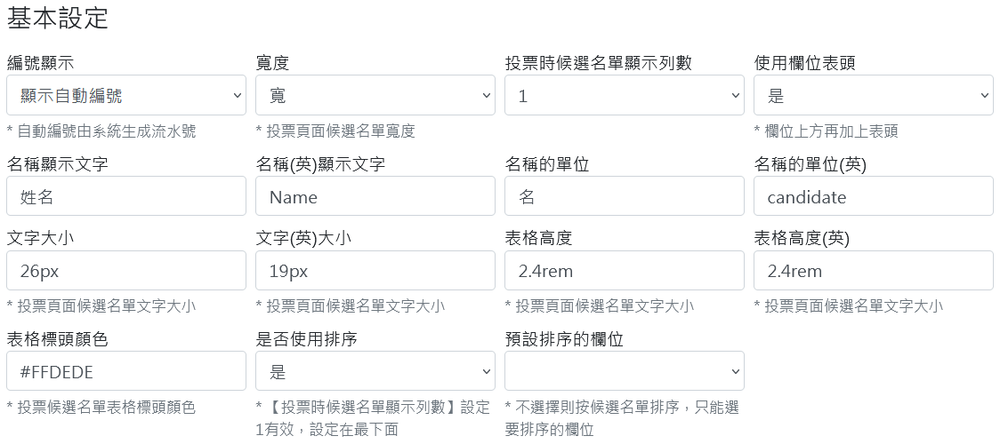
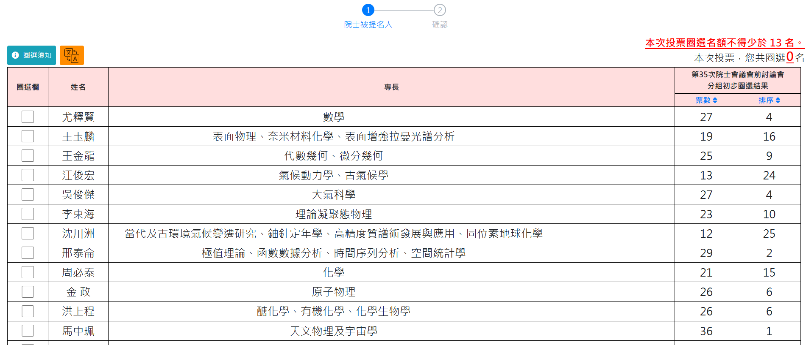
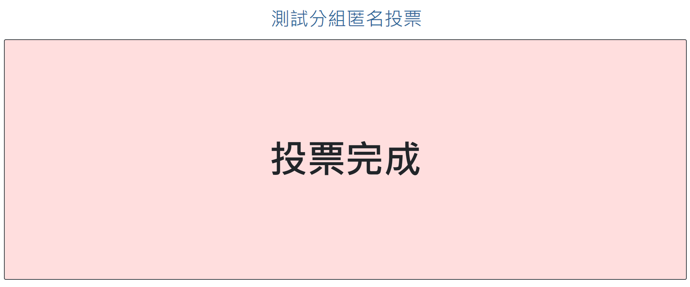
D. 多問題多輪選舉
單一場次、不分組，以多個問題區分類別，並以多輪推進。適合需產出通過名單的候選人選舉。
| 項目 | 建議設定 |
|---|---|
| 投票類型 | 匿名 |
| 是否分組 | 否 |
| 場次數量 | 1 |
| 是否多輪 | 是 |
| 候選名單配置 | 依問題個別設定 |
| 投票畫面 | 單列、欄位表頭、排序（可預設依候選名單順序）、自訂欄位 |
| 其他 | 自訂未圈選顯示名稱；會議版主題色 |
| 列印項目 | 計票單、封存單、通過名單 |
畫面示意：
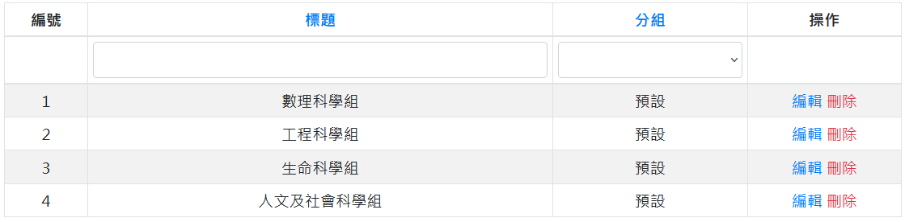
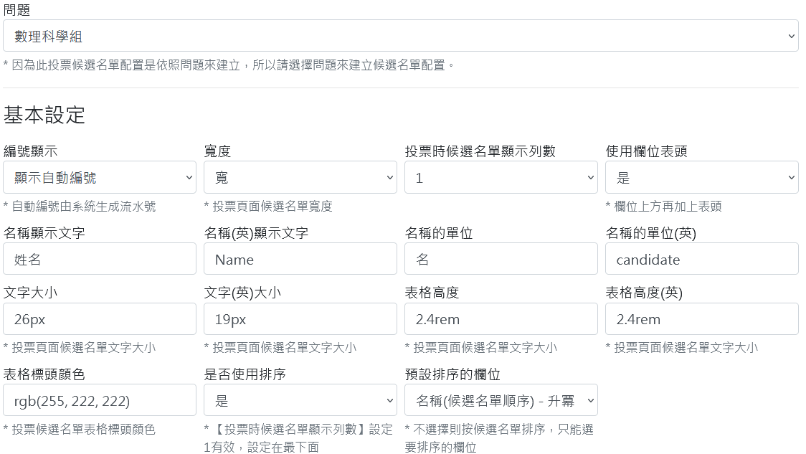
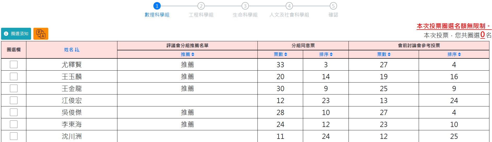
E. 參考投票 → 正式投票
兩階段流程：先以各組參考／初選場次篩選名單，再匯入單一正式場次進行決選。正式票若需「達全體人數比例」門檻，請設定投票母數，並可匯出結果計票單。
E-1. 參考／初選（各組場次）
| 項目 | 建議設定 |
|---|---|
| 投票類型 | 匿名 |
| 是否分組 | 否 |
| 場次數量 | 多（每組一場） |
| 是否多輪 | 可 |
| 候選名單配置 | 依投票場次統一 |
| 投票畫面 | 多列；主題色；可有自訂欄位 |
| 其他 | 自訂未圈選顯示名稱；規則可依現場調整；通常不設首頁導向 |
| 列印項目 | 計票單、封存單 |
畫面示意：
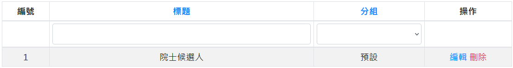
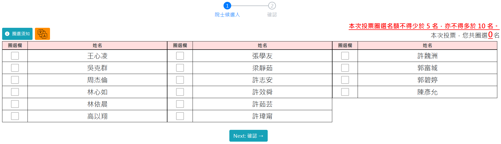
E-2. 正式／決選（單一大會場次）
| 項目 | 建議設定 |
|---|---|
| 投票類型 | 匿名 |
| 是否分組 | 是 |
| 場次數量 | 1 |
| 是否多輪 | 是 |
| 候選名單配置 | 依問題個別設定 |
| 問題 | 可有多類問題（一般／特別類），版面與欄位可不同 |
| 投票母數 | 需要「達全體人數比例」門檻時設定 |
| 其他 | 自參考結果匯入候選 CSV；自訂未圈選名稱與投票規則文字；會議版主題色 |
| 列印項目 | 計票單、封存單、通過名單、結果計票單 |
畫面示意：
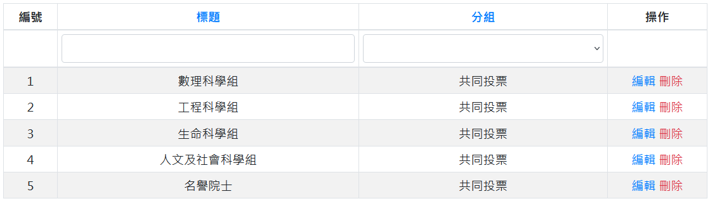
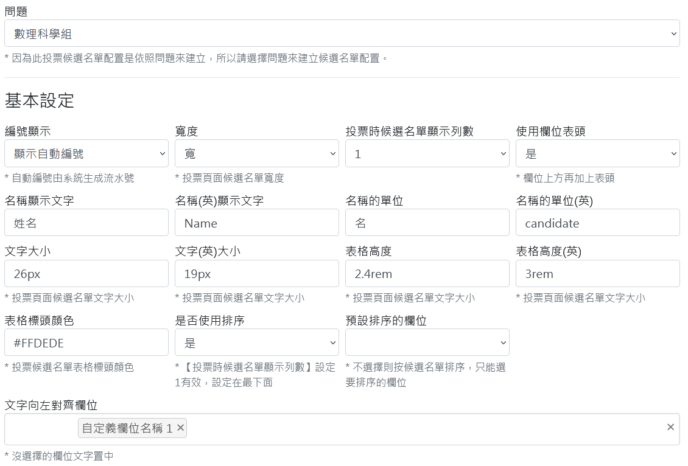
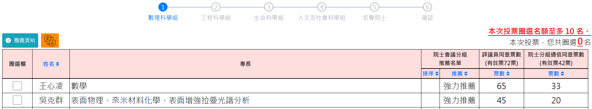